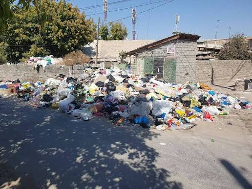

Проблема мусора в Бекабаде:
Анализ и Пути Решения
Наш город — наш дом. Как промышленный центр Узбекистана сталкивается с бытовыми и промышленными отходами, и что мы можем сделать для сохранения чистоты Бекабада уже сегодня.
Актуальность проблемы в Бекабаде
Бекабад — крупный индустриальный узел. Сочетание промышленной нагрузки и бытового мусора требует особого внимания со стороны жителей и экологических служб.

Рост бытовых отходов
С ростом населения и потребления пластиковой упаковки объем мусора в жилых районах Бекабада стремительно увеличивается. Несанкционированные свалки у дворов ухудшают санитарное состояние.

Промышленная специфика
Наличие крупного металлургического завода и цементных производств требует раздельного подхода к бытовым и строительно-промышленным отходам для предотвращения загрязнения почвы и реки Сырдарья.
Основные источники загрязнения
Почему скопление мусора становится системной проблемой
Недостаток баков
В некоторых махаллях наблюдается нехватка контейнеров для сбора мусора или их несвоевременный вывоз.
Культура утилизации
Отсутствие привычки раздельного сбора пластика, стекла и бумаги среди населения увеличивает общие объемы свалок.
Пластиковый бум
Использование одноразовых пакетов и ПЭТ-бутылок, которые разлагаются сотни лет и разнятся ветром по городу.
План борьбы и Пути Решения
Практические шаги, которые изменят экологическую ситуацию в городе к лучшему

1. Раздельный сбор и сортировка
Установка контейнеров для пластика, бумаги и стекла в махаллях Бекабада позволит отправлять сырьё на вторичную переработку.

2. Эко-инициативы и субботники
Проведение уборок в школах, парках и вдоль русла реки Сырдарья при участии жителей и молодежи города.
Экологическое просвещение: Уроки экологии в школах Бекабада для формирования привычки не мусорить.
Контроль и штрафы: Установка камер и усиление контроля за несанкционированным выбросом строительного мусора.
Что может сделать каждый из нас прямо сейчас?
Использовать эко-сумки
Заменить одноразовые полиэтиленовые пакеты на многоразовую тканевую сумку при походах на базар или в магазин.
Меньше одноразового пластика
Пользоваться многоразовыми бутылками для воды вместо ежедневной покупки новых ПЭТ-бутылок.
Участие в субботниках
Поддерживать чистоту в своем дворе и участвовать в общественных акциях по благоустройству Бекабада.
Личный пример
Никогда не выбрасывать мусор мимо урны и приучать к чистоте друзей, близких и младших.
Бекабад — чистый город будущего
Чистота города начинается с каждого из нас. Соблюдая простые правила утилизации и заботясь об окружающей среде, мы сможем сделать Бекабад зеленым, ухоженным и красивым домом для будущих поколений.
Спасибо за внимание!